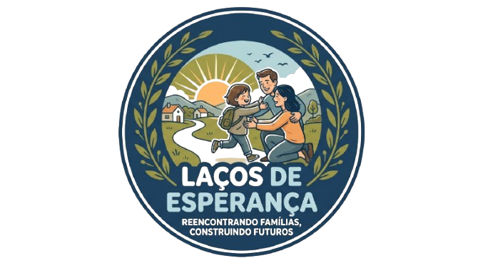

Proteção, reencontro e recomeço
Reencontrando famílias, construindo futuros.
A Laços de Esperança é uma organização não governamental sem fins lucrativos que busca apoiar crianças separadas de suas famílias em contextos de conflitos armados.

Nosso propósito
Transformar separações em possibilidades de reencontro.
Atuamos com investigação, apoio documental, acolhimento e articulação para favorecer processos de reunificação familiar seguros.
O nosso objetivo
Reaproximar o que a guerra separou.
Em cenários de conflito armado, crianças podem perder documentos, referências familiares e redes de proteção. Nossa atuação busca restaurar dignidade, segurança e vínculos familiares.